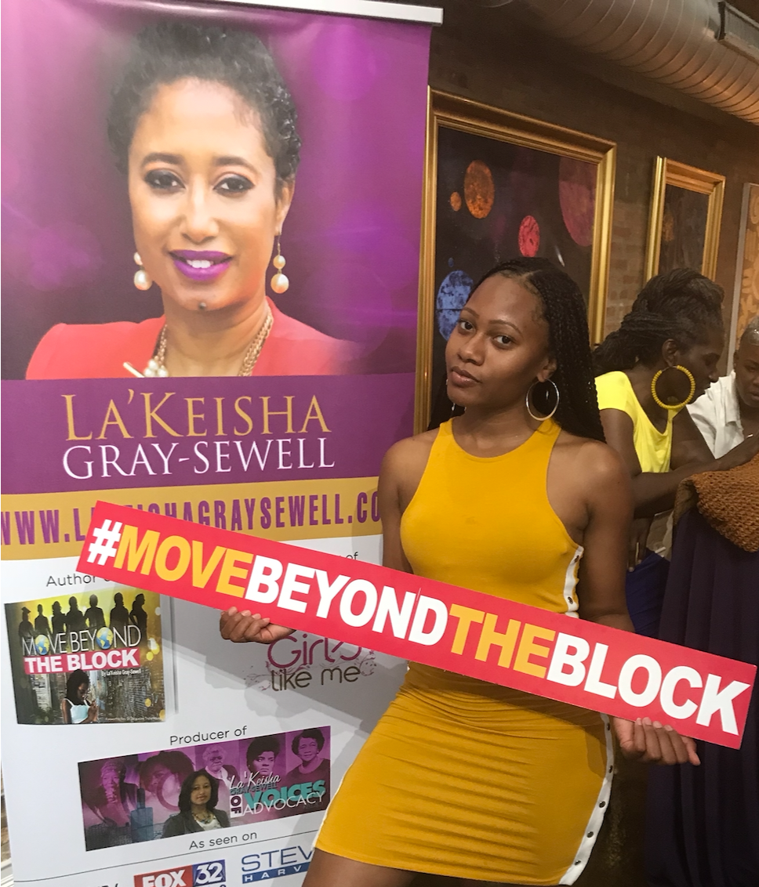
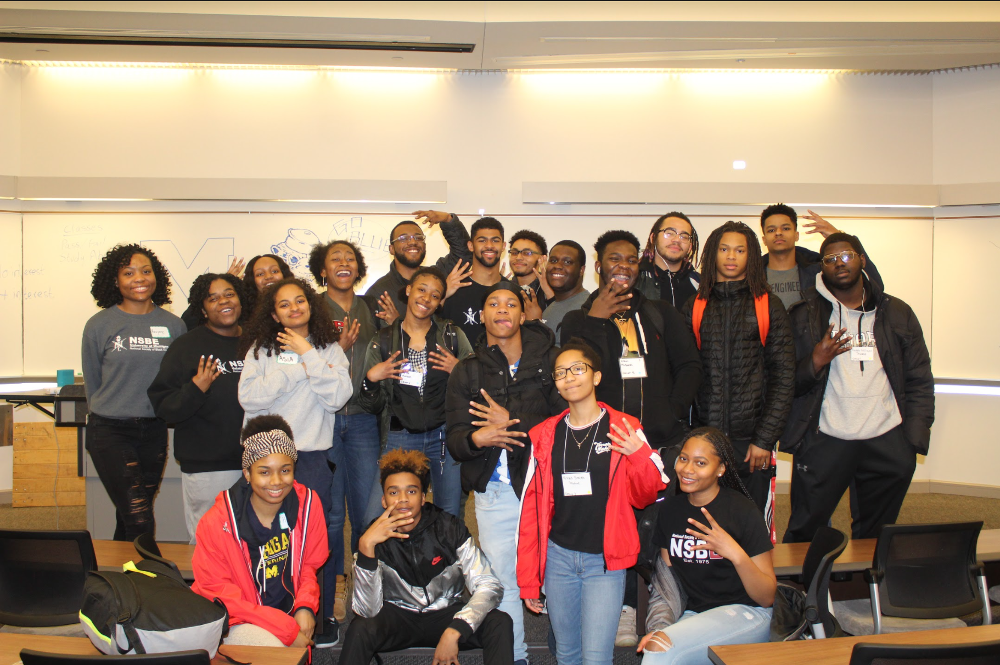

Community
Community service has always been a great passion of mine. There's nothing that makes me happier than helping others. I have been active in community service at every stage of my life. However, the most prominent three organizations that have allowed me to positively impact my community the most are Chicago's Hermitage Community Gardens, the Girls Like Me Project, and the National Society of Black Engineers. This page is a gallery dedicated to my volunteer experiences with those organizations.




